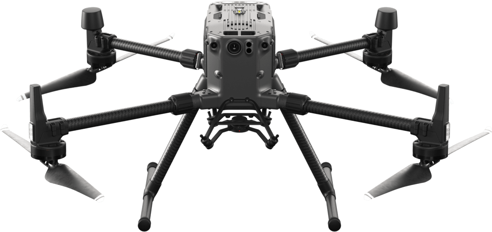

Кто мы такие и в чем заключается наша помощь?
Мы команда, чьи действия способствуют созданию и внедрению
сетецентрических и роботизированных военных возможностей для службы
безопасности Украины (СБУ) и
вооруженных сил Украины (ВСУ) путем
сбора анонимных пожертвований для приобретения новейших беспилотных
летательных аппаратов
Какие беспилотные летательные аппараты мы купим на вырученные средства?
Мы закупаем только проверенные тактические беспилотные летательные
аппараты воздушной разведки:
DJI Mavic 3,
Autel EVO II 640T,
DJI Matrice 300 RTK и
DJI Matrice 30T
Наша цель: приобретение
50 БПЛА для нужд ВСУ и СБУ

DJI Mavic 3

DJI Matrice 30T

DJI Matrice 300 RTK
Эти «дроны» могут летать до
24 часов, на расстояние до
160 км, на высоте до
5 км. Они оснащены несколькими
термографическими камерами с GPS-модулями и картографическим программным
обеспечением. Главное, что их трудно заметить, а это значит, что их
трудно уничтожить, они помогут постоянно следить за линией фронта и
выявлять позиции агрессора
Часто задаваемые вопросы
Безопасность
В целях сохранения полной анонимности мы осуществляем сбор средств в
криптовалюте (BTC, ETH, USDT), для перевода посредством которой не
нужно предоставлять личную информацию, что позволяет сохранять
конфиденциальность финансовых операций
Инструкция
Как осуществить добровольное пожертвование?
Вы можете сделать перевод через BTC, ETH, USDT с использованием
инструкции
Возможно ли осуществить пожертвование с использованием банковской карты?
Нет, так как данный вид операций отслеживается российским
правительством и правоохранительными органами, что не является
безопасным средством оказания помощи
Чем я еще могу помочь службе безопасности Украины (СБУ) и вооруженным силам Украины (ВСУ)?
Вы можете оказать содействие украинской стороне в выполнении поручений
на территории Российской Федерации как на безвозмездной, так и на
платной основе. Для получения подробных инструкций советуем обратиться
вам в наш Телеграм бот, либо
оставить свой почтовый адрес для связи с нашими представителями
Форма связи
example@mail.com